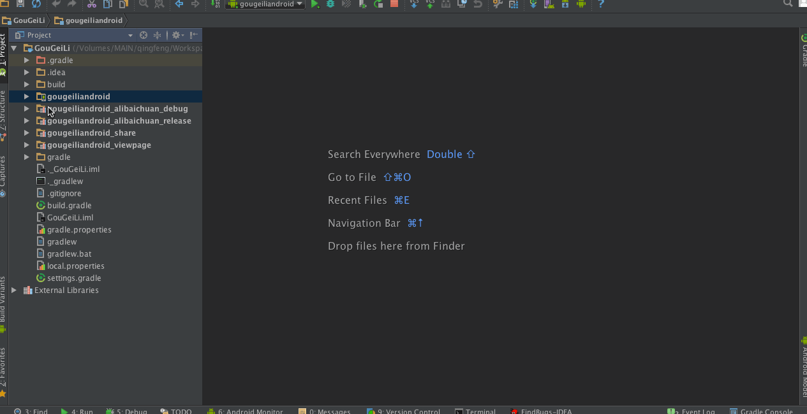
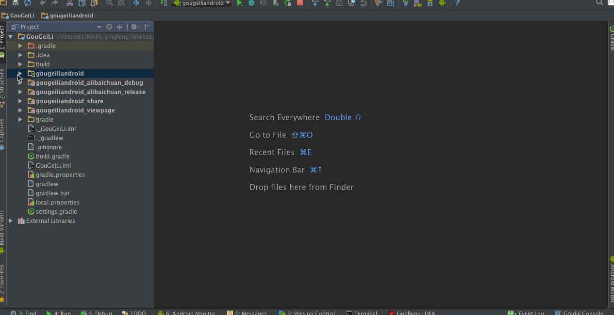

目的
Intent统一跳转协议就是为了解决模块之间的耦合而存在的，不再以
|
|
的方式进行页面跳转，而是以路径的形式进行跳转，去除了模块之间的引用，从而解决了模块之间的耦合问题。
其中路径形式一般是以下形式：
|
|
但是因为这样形式的路径都是在Androidmanifset.xml文件中进行定义的，根据业务的需要，不一定会完整定义跳转Uri，所以有以下两种情况。
情况一：定义完整
情况一：在清单文件中已经定义完整了data中的scheme、host和path后，一般不需要在Activity中接收处理，除非含有其他参数，例如gougeli://page.sh/detail?userId=123456。
Intent统一跳转协议分为以下几步：
（1）在Androidmanifest.xml文件中配置intent-filter，例如：
|
|
（2）新建一个枚举类型的文件ActivityType，定义名称为Androidmanifest.xml文件中的intent-filter字段下的data字段下的android:path的值，例如：
|
|
（3）编写SHIntent类，获取统一跳转所需的intent意图，通过之前设置的ActivityType实现路径的拼接，具体实现如下：
|
|
（4）到此我们就设置好了接收方，接下来就是设置发送方了。我们可以设置一个SHJump类，编写跳转到detail的方法，参数可填写bean类，用于数据的传递。例如：
|
|
当然也可以是其他的参数类型，但是你也应该发现了，如果在SHJump类中写好了，也意味着写死了，如果需要灵活的实现数据的传递，可以通过SHIntent实现，其实是一样的，只不过不封装在SHJump类中了，因为SHJump类中存放的是通用方法。
情况一：操作流程图

情况二：未定义完整
情况二：在清单文件中未定义完整data中的参数，例如只定义了scheme，那么就需要在该Activity中进行接收处理，例如：gglapp://2836482321。
Intent统一跳转协议分为以下几步：
（1）在Androidmanifest.xml文件中配置intent-filter，例如：
|
|
（2）此处并未使用统一跳转协议，所以以详细情况为例：
问：将购给利中的商品分享到微信后，用浏览器打开该链接，再点击其中的某个商品，只是跳转到客户端的首页，不能够跳转到购给利的商品详情页？
答：使用intent接收并传递数据时，使用的intent对象出现错误，导致uri为空。
代码解析：因为从外部浏览器跳转到内部Activity，必然有一个Uri地址，再由上述清单文件中只是定义了scheme，最后根据问题得知最终目的是跳转到商品详情页，所以StartActivity必然有通过getIntent方法接收Uri地址的代码，通过搜索getIntent发现如下代码：
|
|
上述代码表示从浏览器接收到了Uri地址之后，并将其传递到了MainActivity这个类中。
（3）然后我们可以在MainActivity中查找相关代码，这样比较复杂，我们可以将光标移动到EXTRA_URI处，然后按option+F7，即可迅速定位到相关代码位置，代码如下：
|
|
于是我们发现它将Uri交给了UriHandler进行处理，再到UriHandler类中进行查看：
|
|
最终发现了处理Uri的详细操作，原来它是通过匹配host来进行区分处理的。
情况二：操作流程图

附
另外还需要注意的是，我们定义这样形式的路径只是定义了接收方而已，而发送方是谁都可以进行发送的。
版权声明

本网站如未注明，均由青峰创作并维护；本网站采用知识共享署名-非商业性使用-相同方式共享 4.0 国际许可协议进行许可。转载请注明作者及出处。
本文永久链接：https://fengqingxiuyi.github.io/2016/07/23/ShowJoy/Intent统一跳转协议/